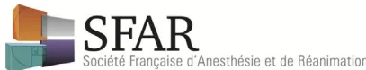

Anne-Sophie Ducloy-Bouthors1, Jean Tourres2, Jean-Marc Malinovsky3, pour le groupe d'experts de la Sfar et des sociétés et groupements professionnels associés
Disponible sur internet le :
28 avril 2016
Correspondance :
Anne-Sophie Ducloy-Bouthors, CHRU, Maternité Jeanne-de-Flandre, 2, avenue Oscar-Lambret, 59037 Lille cedex, France.
anne-sophie.ducloy@chru-lille.fr

Mots clés
Anesthésie-réanimation
obstétricale
Secteur de naissance
Analgésie du travail
SSPI
Transferts in utero
Réseau de santé périnatale
* Texte validé par le Conseil d'administration de la Sfar le 11 décembre 2015.
KeywordsObstetric anaesthesia and
intensive care
Labour ward
Organisational safety
Perinatal care
Labour analgesia
Post-caesarean section
recovery
Team risk management
Le groupe de lecture était composé des membres du Conseil d'administration du club d'anesthésie réanimation en obstétrique : Françoise Bayoumeu, CHU de Toulouse ; Guy Aya, CHU de Nîmes, Aude-de-la-Dorie, Saint-Thomas hospital, Londres ; Jean Guglielminotti, AP-HP, hôpital Bichat, Paris ; Dan Benhamou, AP-HP, hôpital Bicêtre, Paris ; Estelle Morau, CHU de Montpellier ; Alexandre Mignon, maternité Port-Royal, AP-HP, hôpital Cochin, Paris ; Jean-Patrick Zicarelli, maternité Beauregard, Marseille.
La base de données bibliographique a été élaborée par M. Samuel Degoul, DES anesthésie-réanimation, CHRU de Lille.
Ces recommandations professionnelles (RP) portent sur l'organisation de l'anesthésie, de l'analgesie et de la réanimation dans les établissements de soins habilités à pratiquer l'obstétrique, c'est-à-dire habilités à prendre en charge, en consultation et en hospitalisation, les femmes enceintes dès le début de la grossesse jusqu'à leur accouchement, en post-partum ainsi que les urgences obstétricales et la médecine fœtale.
L'organisation de la prise en charge des urgences gynécologiques n'est abordée dans ces RP que sous l'angle d'une éventuelle mutualisation avec l'activité obstétricale.
Tous les professionnels de la naissance forment une équipe dont l'objectif commun est que l'accouchement et ses complications éventuelles soient gérés de façon coordonnée en assurant la qualité et la sécurité des soins à la femme et à l'enfant. Leur prise en charge est donc nécessairement pluridisciplinaire et multiprofessionnelle : médicale (obstétricien, sage-femme, anesthésiste-réanimateur, pédiatre, biologiste, radiologue, et autres) et paramédicale (infirmier anesthésiste diplômé d'état [IADE], infirmier de bloc opératoire diplômé d'état [IBODE], infirmier diplômé d'état [IDE]), IDE puéricultrice, auxiliaire de puériculture, aide-soignant et autres).
Pour mettre à jour les recommandations sur l'analgesie obstétricale éditée par la Société française d'anesthésie et de réanimation (Sfar) en 1992, les RP sont formalisées à partir des textes réglementaires, d'autres recommandations professionnelles et des avis des experts des corps de métiers concernés par ce domaine. L'objectif de ces RP est de contribuer à la réduction de la morbidité maternelle.
Les chapitres suivants sont abordés :
nouveau-né, réhabilitation après l'accouchement, surveillance continue et réanimation) ;
Le secteur de naissance est situé dans l'unité d'obstétrique qui détient l'autorisation de l'activité. L'article D6124-38 du Code de santé publique précise que le secteur de naissance est composé notamment : des locaux de prétravail ; des locaux de travail ; des locaux d'observation et de soins immédiats aux nouveau-nés ; d'au moins une salle d'intervention pour la chirurgie obstétricale.
Le secteur de naissance est défini comme un secteur à risque par la Haute Autorité de santé (HAS) qui produit un guide spécifique de qualité et sécurité des soins au sein du secteur de naissance dans le cadre de la certification des établissements de santé et de la démarche d'accréditation individuelle ou en équipe des spécialités médicales à risque.
L'organisation des activités du secteur de naissance est décrite (selon les termes de la HAS) dans un manuel-qualité, dans une charte de fonctionnement ou dans le projet de pôle qui inclue l'organisation d'anesthésie-réanimation obstétricale. L'organisation du secteur de naissance doit tenir compte du nombre d'accouchements, mais aussi des épisodes de suractivité et de la charge de soins des femmes enceintes à haut risque. Les situations à risque maternel nécessitent l'organisation de soins de recours maternels pour affecter les moyens supplémentaires humains, matériels et de réseau. La charte de fonctionnement doit être écrite et diffusée à l'ensemble des acteurs ainsi qu'aux autorités institutionnelles. Elle est coordonnée et compatible avec le fonctionnement général des secteurs interventionnels de l'établissement de soins.
Ces RP ont été revues par l'ensemble des experts, du comité d'organisation et des membres de la Société française d'anesthésie et de réanimation (Sfar), du Club d'anesthésie réanimation en obstétrique (Caro), du Collège national de gynécologie-obstétrique français (CNGOF), du Collège national des sages-femmes (CNSF), du collectif des IADE et de la Société française de néonatologie (SFN). La totalité des recommandations ont été soumises pour une cotation type Delphi (cotation sur une échelle de 1 à 9). Après 2 tours de cotations et divers amendements, un accord fort a été obtenu pour les 30 (100 %) recommandations.
Les recommandations qui relèvent d'une disposition légale sont signalées et marquées d'un astérisque *.
Les textes de référence supportant les recommandations sont les suivants :
activités d'obstétrique, de néonatologie ou de réanimation néonatale et modifiant le Code de la santé publique ;
RP 1 – (accord fort et disposition légale*) : il est recommandé que chaque établissement de soins habilité à exercer l'obstétrique dispose des locaux et équipements matériels nécessaires à la réalisation des actes d'anesthésie-réanimation obstétricale répondant aux impératifs suivants dont certains sont réglementaires :
réanimation obstétricales, fixe dans chaque salle d'accouchement et/ou sous forme d'un chariot mobile ;
RP 2.1 – (accord fort et disposition légale*) : pour répondre aux prises en charge obstétricales maternelles et fœtales, quel que soit le nombre d'accouchements, l'anesthésiste-réanimateur doit être disponible dans des délais compatibles avec l'impératif de sécurité.
RP 2.2 – (accord fort) : il est recommandé que l'anesthésiste-réanimateur dispose de l'assistance d'un (ou plusieurs) personnel(s) supplémentaire(s) en raison de la spécificité de l'activité d'anesthésie-réanimation obstétricale non programmée (survenue potentielle de plusieurs actes d'anesthésie-réanimation « urgents » concernant plusieurs patientes simultanément ou survenue d'une complication maternelle sévère). La charte de fonctionnement identifie quotidiennement ce(s) personnel(s) supplémentaire(s) pour qu'il(s) soi(en)t disponible(s) et dédié(s) à cette assistance pendant la période la nécessitant. Plusieurs options permettent de répondre à cette recommandation : un(e) second anesthésiste-réanimateur, un anesthésiste-réanimateur en formation, un(e) IADE, un(e) IDE formé(e) à la SSPI ou un personnel médical (sage-femme, obstétricien) ou paramédical (IDE) de l'équipe obstétricale.
RP 2.3 – (accord fort) : pour déterminer l'adéquation des ressources humaines d'anesthésie-réanimation dédiées à l'activité obstétricale dans tous les établissements de soins habilités à pratiquer l'obstétrique et, en particulier, dans ceux assurant une prise en charge de recours, il est recommandé de tenir compte :

junior. . .), liés à l'équipe (communication. . .), liés à l'environnement, liés à l'organisation et à l'institution.
RP 2.4 – (accord fort) : il est recommandé de revoir ces ressources d'anesthésie réanimation à périodicité définie de deux ans maximum en fonction notamment des résultats objectifs de l'analyse collective des événements indésirables associés aux soins (EIAS) déclarés dans l'année et de l'évolution du nombre d'accouchements annuels.
RP 2.5 – (accord fort) : il est recommandé à partir de ces éléments d'anticiper et d'optimiser la qualité et la sécurité de la prise en charge des patientes par la mise à disposition de ressources d'anesthésie réanimation identifiées et organisées au sein de chaque structure.
RP 2.5.1 – (accord fort) : si l'activité obstétricale est inférieure à 2000 accouchements annuels et si l'anesthésiste-réanimateur n'est pas dédié au secteur de naissance, il est recommandé de prévoir une organisation et une hiérarchisation pour que soient assurées la sécurité et la continuité des soins d'anesthésie-réanimation dans les secteurs d'activité mutualisés avec priorité à l'activité obstétricale urgente.
RP 2.5.2 – (accord fort et disposition légale*) : si l'activité obstétricale est supérieure à 2000 accouchements, l'anesthésiste-réanimateur doit être dédié au secteur naissance conformément au décret périnatalité n° 98_900 du 9 octobre 1998.
RP 2.5.3 – (accord fort) : au-delà de 2000 accouchements par an, l'équipe d'anesthésie-réanimation comporte un nombre de personnel soignant suffisant pour assurer l'activité habituelle et dispose d'une organisation écrite, connue et validée de renfort ponctuel (charte de fonctionnement ou procédure).
RP 2.6 – (accord fort et disposition légale*) : il est recommandé que ces organisations soient opérationnelles 24 h/24 afin d'assurer la continuité et la permanence des soins en anesthésie-réanimation obstétricale.
RP 3.1 – (accord fort et disposition légale*) : il est obligatoire d'évaluer le risque anesthésique, de proposer une stratégie analgésique et anesthésique et d'en informer la patiente lors de la consultation préanesthésique obligatoire, réglementaire et d'effectuer la visite préanesthésique avant l'acte d'anesthésie réanimation et d'analgésie selon les termes réglementaires.
RP 3.2 – (accord fort) : en l'absence de consultation préanesthésique et/ou de visite préanesthésique, il est recommandé de réaliser l'acte d'anesthésie réanimation d'urgence ou d'analgésie après un interrogatoire et un examen clinique minimal compatible avec l'éventuel degré d'urgence s'assurant néanmoins de l'absence de contre-indication apparente au geste.
RP 3.3 – (accord fort) : quel que soit le nombre d'accouchements, il est recommandé qu'une procédure permettant la
réalisation et la sécurité de l'analgésie obstétricale en salle de travail (périmédullaire ou par une autre méthode médicamenteuse) soit organisée et consignée dans une charte de fonctionnement du secteur de naissance et comprenne :
RP 3.4 – (accord fort et disposition légale*) : pour l'organisation de l'anesthésie réanimation obstétricale, il est recommandé d'appliquer et de consigner les directives du décret n° 94_1050 du 5 décembre 1994 et du décret n° 98_900 du 9 octobre 1998 dans la charte de fonctionnement du bloc et du secteur de naissance.
RP 3.5 – (accord fort) : il est recommandé aux équipes d'obstétrique et d'anesthésie réanimation d'établir un code de communication permettant une définition claire du degré d'urgence de l'intervention.
RP 3.6 – (accord fort et disposition légale*) : il est recommandé que le dossier d'anesthésie réanimation comporte la consultation préanesthésique et l'ensemble des données et événements liés au patient, à l'intervention et à l'analgésie et anesthésie réanimation. Il est partie intégrante du dossier médical de la patiente.
RP 3.7 – (accord fort) : il est recommandé d'identifier avant chaque naissance un membre de l'équipe obstétricopédiatrique pour accueillir le nouveau-né en salle de naissance. En cas de situations à risque maternelles et/ou fœtales, la présence d'un pédiatre formé à la réanimation néonatale est nécessaire et doit être anticipée.
Dans les situations urgentes au cours desquelles la présence d'un pédiatre n'a pas pu être anticipée et si l'état du nouveau-né le nécessite, l'anesthésiste-réanimateur, peut participer, en dehors de toute complication maternelle, aux premiers soins avec la sage-femme et si besoin initier la réanimation du
nouveau-né en attendant la prise en charge par l'équipe pédiatrique. Il est souhaitable, pour répondre à cette éventualité, que l'anesthésiste-réanimateur bénéficie d'une formation à la réanimation néonatale en salle de naissance.
RP 3.8 – (accord fort et disposition légale*)) : il est recommandé que la surveillance postanesthésique (après anesthésie pour césarienne ou gestes obstétricaux) soit continue et réalisée par du personnel dédié et formé. La surveillance obstétricale est du domaine de compétence de l'équipe obstétricale mais la communication entre les deux catégories de personnel est organisée et les décisions écrites.
RP 3.9 – (accord fort et disposition légale*)) : il est recommandé que la surveillance postanesthésique de la parturiente s'effectue soit au sein d'une salle de surveillance post-interventionnelle située à proximité de la salle d'intervention dédiée aux césariennes ou dans une SSPI centralisée (avec du personnel dédié et formé, présent 24 h/24), soit dans la salle de travail où a eu lieu l'acte d'anesthésie, dans la mesure où elle est réalisée par du personnel dédié et formé.
RP 3.10 – (accord fort) : il est recommandé que cette organisation de la surveillance postanesthésique soit prévue et écrite dans la charte du secteur de naissance selon le mode de fonctionnement optimal pour la sécurité de la patiente dans la structure.
RP 3.11 – (accord fort) : il est recommandé que les dispositions architecturales et les procédures de soins en salle de surveillance post-interventionnelle favorisent la relation mère-père-nouveau-né et précisent les modalités de la surveillance du nouveau-né.
RP 3.12 – (accord fort) : il est recommandé de mettre en œuvre la prise en charge de la douleur et un programme de réhabilitation rapide avec une approche pluridisciplinaire pour l'organisation des soins après accouchement voie basse ou après césarienne.
RP 3.13 – (accord fort) : il est recommandé d'anticiper et d'organiser la surveillance continue des patientes présentant ou susceptibles de présenter une ou plusieurs défaillances d'organe en rapport avec une pathologie obstétricale sévère ou avec une pathologie maternelle compliquée par la grossesse et d'orienter la patiente vers une unité de réanimation en cas de persistance d'une défaillance d'organe nécessitant une suppléance, d'apparition d'une défaillance multiviscérale ou de la mise en jeu du pronostic vital selon la convention établie entre chaque unité d'obstétrique et une unité de réanimation adulte, notamment si l'établissement où est située la maternité n'en dispose pas.
RP 3.14 – (accord fort et disposition légale*)) : il est recommandé que cette convention précise le partage de dossier et de la
feuille de surveillance, la traçabilité des produits sanguins administrés, les critères et les conditions du transfert*.
RP 4.1 – (accord fort) : il est recommandé de mettre en place des protocoles de soins, des démarches d'évaluation et d'amélioration de la qualité des soins en équipe par des analyses de morbid mortalité avec l'ensemble de l'équipe médicale et paramédicale d'anesthésie réanimation obstétricale.
RP 4.2 – (accord fort) : il est recommandé de mettre en place ces démarches de gestion des risques interdisciplinaires pluriprofessionnelles incluant les personnels d'anesthésie-réanimation au sein du réseau de périnatalité.
RP 4.3 – (accord fort et disposition légale*)) : il est recommandé de prévoir les orientations des patientes, les modes et les conditions de leur transfert entre les maternités selon les recommandations de la HAS 2012 concernant les transferts in utero et selon la liste indicative des cas de transfert proposée par la circulaire du 21 juin 2006.
RP 4.4 – (accord fort et disposition légale*)) : il est recommandé de consigner les conditions de prise en charge anesthésique des patientes transférées de la maison de naissance en expérimentation conventionnée (consultation d'anesthésie, procédure opératoire, gestion des risques a priori) dans la convention qui la lie à l'établissement de soins exerçant l'obstétrique.
RP 4.5 – (accord fort et disposition légale*)) : dans le cadre du développement professionnel continu, il est recommandé aux professionnels d'anesthésie-réanimation d'actualiser leurs compétences et de participer à l'évaluation des pratiques professionnelles cliniques individuelles et collectives dont les revues de morbid mortalité.
RP 4.6 – (accord fort) : il est recommandé de mettre en place des démarches d'évaluation et d'amélioration de la qualité des soins en équipe permettant l'appropriation de procédures validées de situation de crise ou non (césarienne en urgence code couleur, check-list césarienne), par des analyses des pratiques professionnelles communes sur des événements redoutés (hémorragie du post-partum, procidence cordon, hématome rétroplacentaire, éclampsie, rupture utérine, embolie amniotique...), par l'identification et l'analyse collective d'événements indésirables associés aux soins (événements porteurs de risque et événements indésirables graves) en revue de morbid mortalité (RMM), comité de retour d'expérience (CREX) comme cela est recommandé par la HAS, par la participation à des sessions de formation en équipe aux techniques de communication (outils d'amélioration de la communication entre professionnels) et aux séances de simulation, par le suivi

d'indicateurs du tableau de bord (indicateurs nationaux IPAQSS, taux d'hémorragies du postpartum grave, taux de transfusion, taux de césarienne, délai décision-incision).
Les présentes recommandations professionnelles servent de support aux professionnels de l'anesthésie-réanimation obstétricale dans le but d'assurer la qualité et la sécurité des soins d'anesthésie réanimation obstétricale. Ces recommandations professionnelles doivent être intégrées à la charte de fonctionnement du secteur de naissance écrite dans chaque établissement. Les procédures sont pour partie définies par les impératifs légaux. L'élaboration de cette organisation dans chaque établissement s'appuie sur les outils de gestion du risque : analyse des risques a priori, analyses de pratiques professionnelles interdisciplinaires et pluriprofessionnelles et
démarches de gestion du risque en équipe et de gestion de crise. L'évolution du paysage vers une concentration des structures d'obstétrique et la complexification des pathologies nécessite la définition d'un type de soins maternels de recours afin de mettre à la disposition de l'équipe les moyens complémentaires nécessaires humains et matériels. La mise en place de cette organisation selon les recommandations professionnelles est coordonnée aux recommandations de la HAS sur la sécurité en secteur de naissance et l'amélioration continue du travail en équipe. Elle est évaluée par des indicateurs qui portent sur deux grands volets : organisation et pratiques professionnelles.
Déclaration de liens d'intérêts : les auteurs déclarent ne pas avoir de liens d'intérêts.
Les soins maternels de recours définissent l'accès aux soins d'urgence et de réanimation maternelle indépendamment du type de soins de néonatologie. L'existence d'une pathologie maternelle et d'une pathologie fœtale simultanée conduit à les associer comme éléments d'orientation du transfert éventuel.
Conditions opérationnelles des soins maternels de recours : à titre indicatif :
obstétricales critiques et détachable des soins cliniques courants ;
réapprovisionnement en produits sanguins labiles à partir d'un dépôt conventionné ;